1과목: 재료역학
1. 원형단면 축에 147kW의 동력을 회전수 2000rpm으로 전달시키고자 한다. 축 지름은 약 몇 cm로 해야 하는가? (단, 허용전단응력은 τω=50MPa이다.)
2. 그림과 같이 외팔보의 중앙에 집중하중 P가 작용하는 경우 집중하중 P가 작용하는 지점에서의 처짐은? (단, 보의 굽힘강성 El는 일정하고, L은 보의 전체 길이이다.)
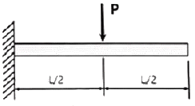
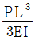
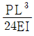
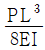
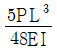
3. 직사각형 단면의 단주에 150kN 하중이 중심에서 1m만큼 편심되어 작용할 때 이 부재 BD에서 생기는 최대 압축응력은 약 몇 kPa인가?
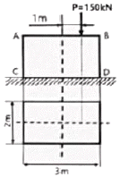
4. 그림과 같은 균일 단면의 돌출보에서 반력 RA는? (단, 보의 자중은 무시한다.)
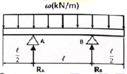
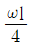
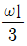
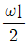
5. 양단이 고정된 축을 그림과 같이 m-n단면에서 T만큼 비틀면 고정단 AB에서 생기는 저항 비틀림 모멘트의 비 TA/TB는?
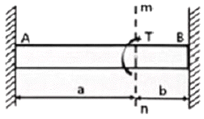
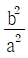
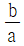
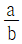
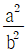
6. 그림의 평면응력상태에서 최대 주응력은 약 몇 MPa인가? (단, ax=175MPa, ay=35MPa, τxy=60MPa이다.)
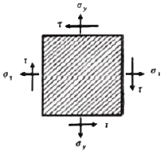
7. 동일한 길이와 재질로 만들어진 두 개의 원형단면 축이 있다. 각각의 지름이 d1, d2일 때 각 축에 저장되는 변형에너지 u1, u2의 비는? (단, 두 축은 모두 비틀림 모멘트 T를 받고 있다.)
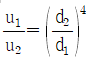
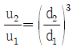
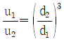
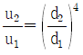
8. 진도 레일의 온도가 50℃에서 15℃로 떨어졌을 때 레일에 생기는 열응력은 약 몇 MPa인가? (단, 선팽창계수는 0.000012/℃, 세로탄성계수는 210GPa이다.)
9. 그림과 같이 양단에서 모멘트가 작용할 경우 A지점의 처짐각 θA는? (단, 보의 굽힘 강성 El은 일정하고, 자중은 무시한다.)
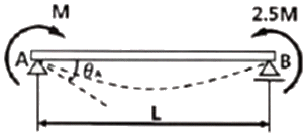
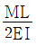
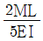
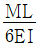
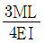
10. 그림과 같은 트러스 구조물에서 B점에서 10kN의 수직 하중을 받으면 BC에 작용하는 힘은 몇 kN인가?
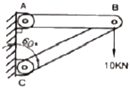
11. 그림과 같이 길고 얇은 평판이 평면 변형률 상태로 σx를 받고 있을 때, ϵx는?
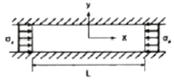
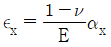
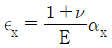
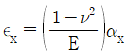
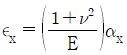
12. 그림과 같은 빗금 친 단면을 갖는 중공축이 있다. 이 단면의 O점에 관한 극단면 2차모멘트는?
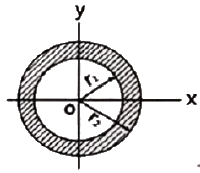
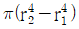
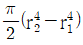
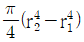
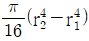
13. 외팔보의 자유단에 연직 방향으로 10kN의 집중 하중이 작용하면 고정단에 생기는 굽힘 응력은 약 몇 MPa인가? (단, 단면(폭×높이)b×h=10cm×15cm, 길이 1.5m이다.)
14. 지름 300mm의 단면을 가진 속이 찬 원행보가 굽힘을 받아 최대 굽힘 응력이 100MPa이 되었다. 이 단면에 작용한 굽힘 모멘트는 약 몇 kNㆍm인가?
15. 원형 봉에 축방향 인장하중 P=88kN이 작용할 때 직경의 감소량은 약 몇 mm인가? (단, 통은 길이 L=2m, 직경 d=40mm, 세로탄성계수는 70GPa, 포아송비 μ=0.3이다.)
16. 전체 길이가 L이고, 일단 지지 및 타단 고정보에서 삼각형 분포 하중이 작용할 때, 지지점 A에서의 반력은? (단, 보의 굽힘강성 EI는 일정하다.)
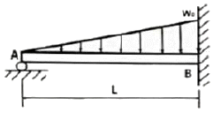
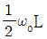
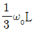
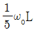
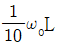
17. 지름 D인 두서가 얇은 링(ring)을 수평면 내에서 회전 시킬 때, 링에 생기는 인장응력을 나타내는 식은? (단, 링의 단위 길이에 대한 무게를 W, 링의 원주속도를 V, 링의 단면적을 A, 중력가속도를 g로 한다.)
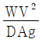
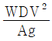
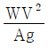
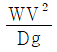
18. 단면적이 4cm2인 강봉에 그림과 같은 하중이 작용하고 있다. W=60kN, P=25kN, I=20cm일 때 BC부분의 변형률 ϵ은 약 얼마인가? (단, 세로탄성계수는 200GPa이다.)
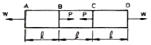
19. 오일러 공식이 세장비
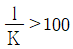
에 대해 성립한다고 할 때, 양단이 한지인 원형단면 기둥에서 오일러 공식이 성립하기 위한 길이 "l"과 지름 "d"와의 관계가 옳은 것은? (단, 단면의 회전반경을 k라 한다.)20. 그림과 같은 단면을 가진 외팔보가 있다 그 단면의 자유단에 전단력 V=40kN이 발생한다면 단면 a-b 위에 발생하는 전단응력은 약 몇 MPa인가?
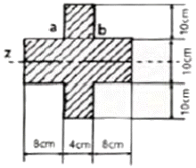
2과목: 기계열역학
21. 압력 1000kPa, 온도 300℃ 상태의 수증기(엔탈비 3⑤1.15kJ/kg, 엔트로피 7.1228kJ/kgㆍK)가 증기터빈으로 들어가서 100kPa상태로 나온다. 터빈의 출력 일이 370kJ/kg일 때 터빈의 효율(%)은?
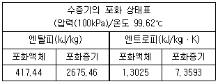
22. 열역학 제2법칙에 대한 설명으로 틀린 것은?
23. 300L 체적의 진공인 탱크가 25℃, 6MPa의 공기를 공급하는 관에 연결된다. 밸브를 열어 탱크 안의 공기 압력이 5MPa이 될 때까지 공기를 채우고 밸브를 닫았다. 이 과정이 단열이고 운동에너지와 위치에너지의 변화를 무시한다면 탱크 안의 공기의 온도(℃)는 얼마가 되는가? (단, 공기의 비열비는 1.4이다.)
24. 단열된 가스터빈의 입구 측에서 압력 2MPa, 온도 1200 K인 가스가 유입되어 출구 측에서 압력 100kPa, 온도 600K로 유출된다. 5MW의 출력을 얻기 위해 가스의 질량유량(kg/s)은 얼마이어야 하는가? (단, 터빈의 효율은 100%이고, 가스의 정압비열은 1.12kJ/(kgㆍK)이다.)
25. 공기 10kg이 압력 200kPa, 체적 5m3 상태에서 압력 400kPa, 온도 300℃인 상태로 변한 경우 최종 체적(m3)은 얼마인가? (단, 공기의 기체상수는 0.287kJ/kgㆍK이다.)
26. 이상적인 냉동사이클에서 응축기 온도가 30℃, 증발기 온도가 -10℃일 때 성적 계수는?
27. 초기 압력 100kPa, 초기 체적 0.1m3인 기체를 버너로 가열하여 기체 체적이 정압과정으로 0.5m3이 되었다면 이 과정동안 시스템이 외부에 한 일(kJ)은?
28. 랭킨사이클에서 보일러 입구 엔탈피 192.5kJ/kg, 터빈 입구 엔탈피 3002.5kJ/kg, 응축기 입구 엔탈피 2361.8kJ/kg일 때 열효율(%)은? (단, 펌프의 동력은 무시한다.)
29. 준평형 정적과정을 거치는 시스템에 대한 열 전달량은? (단, 운동에너지와 위치에너지의 변화는 무시한다.)
30. 1kW의 전기히터를 이용하여 101kPa, 15℃의 공기로 차있는 100m3의 공간을 난방하려고 한다. 이 공간은 견고하고 밀폐되어 있으며 단열되어 있다. 히터를 10분동안 작동시킨경우, 이 공간의 최종온도(℃)는? (단, 공기의 정적비열은 0.718kJ/kgㆍK이고, 기체상수는 0.287kJ/kgㆍK이다.)
31. 펌프를 사용하여 150kPa, 26℃의 물을 가역단열과정으로 650kPa까지 변화시킨 경우, 펌프의 일(kJ/kg)은? (단, 26℃의 포화액의 비체적은 0.001m3/kg이다.)
32. 열역학적 관점에서 다음 장치들에 대한 설명으로 옳은 것은?
33. 피스톤-실린더 장치에 들어있는 100kPa, 27℃의 공기가 600kPa까지 가역단열과정으로 압축된다. 비열비가 1.4로 일정하다면 이 과정동안에 공기가 받은 일(kJ/kg)은? (단, 공기의 기체상수는 0.287kJ/(kgㆍK)이다.)
34. 다음 중 가장 큰 에너지는?
35. 이상기체 1kg을 300K, 100kPa에서 500K까지 “PVn=일정”의 과정(n=1.2)을 따라 변화시켰다. 이 기체의 엔트로피 변화량(kJ/K)은? (단, 기체의 비열비는 1.3, 기체상수는 0.287kJ/(kgㆍK)이다.)
36. 실린더 내의 공기가 100kPa, 20℃ 상태에서 300kPa이 될 때까지 가역단열 과정으로 압축된다. 이 과정에서 실린더 내의 계에서 엔트로피의 변화(Kj/(kJㆍK))는? (단, 공기의 비열비(k)는 1.4이다.)
37. 다음은 시스템(계)과 경계에 대한 설명이다. 옳은 내용을 모두 고른 것은?
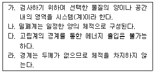
38. 용기 안에 있는 유체의 초기 내부에너지는 700kJ이다. 냉각과정 동안 250kJ의 열을 잃고, 용기 내에 설치된 회전날개로 유체에 100kJ의 일을 한다. 최종상태의 유체의 내부에너지(kJ)는 얼마인가?
39. 보일러에 온도 40℃, 엔탈피 167kJ/kg인 물이 공급되어 온도 350℃, 엔탈피 3115kJ/kg인 수증기가 발생한다. 입구와 출구에서의 유속은 각각 5m/s, 50m/s이고, 공급되는 물의 양 2000kg/h일 때, 보일러에 공급해야 할 열량(kW)은? (단, 위치에너지 변화는 무시한다.)
40. 그림과 같은 공기표준 브레이튼(Brayton) 사이클에서 작동유체 1kg당 터빈 일(kJ/kg)은? (단, T1=300K. T2=475.1K, T3=1100K, T4=694.5K이고, 공기의 정압비열과 정적비열은 각각 1.0035kJ/(kgㆍK), 0.7165kJ/(kgㆍK)이다.)
3과목: 기계유체역학
41. 모세관을 이용한 점도계에서 원형관 내의 유동은 비압축성 뉴턴 유체의 층류유동으로 가정할 수 있다. 원형관의 입구 측과 출구 측의 압력차를 2배로 늘렸을 때, 동일한 유체의 유량은 몇 배가 되는가?
42. 지름이 10cm인 원통에 물이 담겨져 있다. 수직인 중심축에 대하여 300rpm의 속도로 원통을 회전시킬 때 수면의 최고점과 최저점의 수직 높이차는 약 몇 cm인가?
43. 그림과 같이 비중이 1.3인 유체 위에 깊이 1.1m로 물이 채워져 있을 때, 직경 5cm의 탱크 출구로 나오는 유체의 평균 속도는 약 몇 m/s인가? (단, 탱크의 크기는 충분히 크고 마찰손실은 무시한다.)
44. 다음 유체역학적 양 중 질량차원을 포함하지 않는 양은 어느 것인가? (단, MLT 기본차원을 기준으로 한다.)
45. 그림과 같이 오일이 흐르는 수평관 사이로 두 지점의 압력차 p1-p2를 측정하기 위하여 오리피스와 수은을 넣어 U자관을 설치하였다. p1-p2로 옳은 것은? (단, 오일의 비중량은 γoil이며, 수은의 비중량은 γHg이다.)
46. 속도 포텐셜 Ø=Kθ인 와류 유동이 있다. 중심에서 반지름 r인 원주에 따른 순환(circulation)식으로 옳은 것은? (단, K는 상수이다.)
47. 그림과 같이 평행한 두 원판 사이에 점성계수 μ=0.2Nㆍs/m2인 유체가 채워져 있다. 아래 판은 정지되어 있고 윗 판은 1800rpm으로 회전할 때 작용하는 돌림힘은 몇 Nㆍm인가?
48. 피에조미터관에 대한 설명으로 틀린 것은?
49. 밀도가 0.84kg/m3이고, 압력이 87.6kPa인 이상기체가 있다. 이 이상기체의 절대온도를 2배 증가 시킬 때, 이 기체에서의 음속은 약 몇 m/s인가? (단, 비열비는 1.4이다.)
50. 평판 위에 점성, 비압축성 유체가 흐르고 있다. 경계층 두께 δ에 대하여 유체의 속도 υ의 분포는 아래와 같다. 이 때 경계층 운동량 두께에 대한 식으로 옳은 것은? (단, U는 상류속도, y는 판판가의 수식거리이다.)
51. 그림과 같이 폭이 2m인 수문 ABC가 A점에서 힌지로 연결되어 있다. 그림과 같이 수문이 고정될 때 수평인 케이블 CD에 걸리는 장력은 약 몇 kN인가? (단, 수문의 무게는 무시한다.)
52. 지름 100mm관에 글리세린 9.42L/min의 유량으로 흐른다. 이 유동은? (단, 글리세린의 비중은 1.26, 점성계수는 μ2.9×10-4kg/mㆍs이다.)
53. 그림과 같이 날카로운 사각 모서리 입출구를 갖는 관로에서 전수두 H는? (단, 관의 길이를 I, 지름은 d, 관 마찰계수는 f, 속도수두는 이고, 입구 손실계수는 0.5, 출구 손실계수는 1.0이다.)
54. 현의 길이가 7m인 날개의 속력이 500km/h로 비행할 때 이 날개가 받는 양력이 4200kN이라고 하면 날개의 폭은 약 몇 m인가? (단, 양력계수 CL=1. 항력계수 CD=0.02, 밀도 ρ=1.2kg/m3이다.)
55. 그림과 같이 물이 유량 Q로 저수조로 들어가고, 속도 로 저수조 바닥에 있는 면적 A2의 구멍을 통하여 나간다. 저수조 수면 높이가 변화하는 속도 는?
56. 그림과 같이 속도가 V인 유체가 속도 U로 움직이는 곡면에 부딪혀 90°의 각도로 유동 방향이 바뀐다. 다음 중 유체가 곡면에 가하는 힘의 수평방향 성분의 크기가 가장 큰 것은? (단, 유체의 유동단면적은 일정하다.)
57. 담배연기가 비정상 유동으로 흐를 때 순간적으로 눈에 보이는 담배연기는 다음 중 어떤 것에 해당하는가?
58. 중력 가속도 g, 체적유량 Q, 길이 L로 얻을 수 있는 무차원수는?
59. 길이 150m인 배를 길이 10m 모형으로 조파 저항에 관한 실험을 하고자 한다. 실형의 배가 70km/h로 움직인다면, 실형과 모형 사이의 역학적 상사를 만족하기 위한 모형의 속도는 몇 km/h인가?
60. 관로의 전 손실수두가 10m인 펌프로부터 21m 지하에 있는 물을 지상 25m의 송출 액면에 10m3/min의 유량으로 수송할 때 축동력이 124.5kW이다. 이 펌프의 효율은 약 얼마인가?
4과목: 기계재료 및 유압기기
61. 베밋메탈(babbit metel)에 관한 설명으로 옳은 것은?
62. 고용체합금의 시효경화를 위한 조건으로서 옳은 것은?
63. 고 Mn강(hadfeld steel)에 대한 설명으로 옳은 것은?
64. 플라스틱 재료의 일반적인 특징으로 옳은 것은?
65. 현미경 조직 검사를 실시하기 위한 철강용 부식제로 옳은 것은?
66. 상온의 금속(Fe)을 가열 하였을 때 체심입방격자에서 면심입방격자로 변하는 점은?
67. 스테인리스강을 조직에 따라 분류할 때의 기준 조직이 아닌 것은?
68. 담금질한 공석강의 냉각 곡선에서 시편을 20℃의 물 속에 넣었을 때 ㉮와 같은 곡선을 나타낼 때의 조직은?
69. 항온 열처리 방법에 해당하는 것은?
70. 고강도 합금으로써 항공기용 재료에 사용되는 것은?
71. 유체 토크 컨버터의 주요 구성 요소가 아닌 것은?
72. 미터 아웃 회로에 대한 설명으로 틀린 것은?
73. 압력 제어 밸브의 종류가 아닌 것은?
74. 유압유의 구비조건으로 적절하지 않은 것은?
75. 유압 장치의 특징으로 적절하지 않은 것은?
76. 유압 실린더 취급 및 설계 시 주의사항으로 적절하지 않은 것은?
77. 그림의 유압 회로도에서 ①의 밸브 명칭으로 옳은 것은?
78. 펌프에 대한 설명으로 틀린 것은?
79. 채터링 현상에 대한 설명으로 적절하지 않은 것은?
80. 그림과 같은 유압 기호의 명칭은?
5과목: 기계제작법 및 기계동력학
81. 국제단위체계(SI)에서 1N에 대한 설명으로 맞는 것은?
82. 30°로 기울어진 표면에 질량 50kg인 블록이 질량 m인 추와 그림과 같이 연결되어 있다. 경사 표면과 블록 사이의 마찰계수가 0.5일 때 이 블록을 경사면으로 끌어올리기 위한 추의 최소 질량은 약 몇 kg인가?
83. 그림과 같이 질량이 동일한 두 개의 구슬 A, B가 있다. 초기에 A의 속도는 v이고 B는 정지되어 있다. 충돌 수 A와 B의 속도에 관한 설명으로 맞는 것은? (단, 두 구슬 사이의 반발계수는 1이다.)
84. 그림과 같이 최초 정지상태에 있는 바퀴에 줄이 감겨있다. 힘을 가하여 줄의 가속도(a)가 a=4t[m/s2]일 때 바퀴의 각속도(ω)를 시간의 함수로 나타내면 몇 rad/s인가?
85. 그림과 같이 질량이 10kg인 봉의 끝단이 홈을 따라 움직이는 블록 A, B에 구속되어 있다. 초기에 θ=0°에서 정지하여 있다가, 블록 B에 수평력 P=50N이 작용하여 °=45°가 되는 순간의 봉의 각속도는 약 몇 rad/s인가? (단, 블록 A와 B의 질량과 마찰은 무시하고, 중력가속도 g=9.81m/s2이다.)
86. 스프링상수가 20N/cm와 30N/cm인 두 개의 스프링을 직렬로 연결했을 때 등가스프링 상수 값은 몇 N/cm인가?
87. 엔진(질량 m)의 진동이 공장 바닥에 직접 전달될 때 바닥에 힘이 F0sinωt로 전달된다. 이 때 전달되는 힘을 감소시키기 위해 엔진과 바닥 사이에 스프링(스프링 상수 K)과 댐퍼(감쇠상수 c)를 달았다. 이를 위해 진동계의 고유진동수(ωn)와 외력의 진동수(ω)는 어떤 관계를 가져야 하는가? (단, 이고, t는 시간을 의미한다.)
88. 90km/h의 속력으로 달리던 자동차가 100m 전방의 장애물을 발견한 후 제동을 하여 장애물 바로 앞에 정지하기 위해 필요한 제동력의 크기는 몇 N인가? (단, 자동차의 질량은 1000kg이다.)
89. 다음 중 계의 고유진동수에 영향을 미치지 않는 것은?
90. 그림과 같이 질량이 m인 물체가 탄성스프링으로 지지되어 있다. 초기위치에서 자유낙하를 시작하고, 초기 스프링의 변형량이 0일 때, 스프링의 최대 변형량(x)은? (단, 스프링의 질량은 무시하고, 스프링상수는 k, 중력가속도는 g이다.)
91. 숏피닝(shot peening)에 대한 설명으로 틀린 것은?
92. 오스테나이트 조직을 굳은 조직인 베이나이트로 변환시키는 항온 변태 열처리법은?
93. 전기 도금의 반대현상으로 가공물을 양극, 전기저항이 적은 구리, 아연을 음극에 연결한 후 용액에 침지하고 통전하여 금속표면의 미소 돌기부분을 용해하여 거울면과 같이 광택이 있는 면을 가공할 수 있는 특수가공은?
94. 주철과 같은 강하고 깨지기 쉬운 재료(매진 재료)를 지속으로 절삭할 때 생기는 칩의 형태는?
95. 두께 50mm의 연강판을 압연 롤러를 통과시켜 40mm가 되었을 때 압하율은 몇 %인가?
96. 용접의 일반적인 장점으로 틀린 것은?
97. 프레스가공에서 전단가공의 종류가 아닌 것은?
98. 주물사에서 가스 및 공기에 해당하는 기체가 통과하여 빠져나가는 성질은?
99. 선반가공에서 직경 60mm, 길이 100mm의 탄소강 재료 환봉을 초경바이트로 사용하여 1회 절삭 시 가공시간은 약 몇 초인가? (단 절삭 깊이 1.55mm, 절삭속도 150m/mim, 이송은 0.2mm/rev이다.)
100. 침탄법에 비해서 경화층은 얇으나, 경도가 크고 담금질이 필요 없으며, 내식성 및 내마모성이 커서 고온에도 변화되지 않지만 처리시간이 길고 생산비가 많이 드는 표면 경화법은?